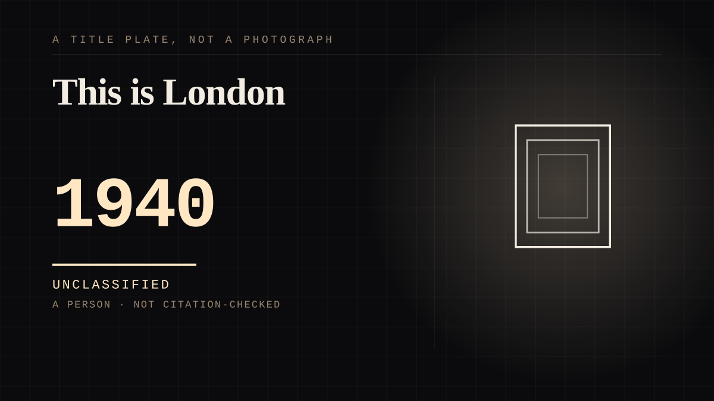

A person · 1940 ·
This is London
The live rooftop broadcasts that carried the Blitz into American homes, and the sign-off that made a reporter and a city the same thing.

Every broadcast went out live, because the sound of the raid was the report. Murrow was, in Philip Seib's account, the only journalist allowed to broadcast live during the air raids on London - a permission arranged with Winston Churchill's intervention - and the recording technology of the day was, in Neal Conan's word and with Seib's agreement, klutzy; Murrow's argument was the silence and the anti-aircraft fire, transmitted while they were happening. The opening line, 'This is London', with its deliberate pause after This, was his speech teacher Ida Lou Anderson's suggestion, and it turned a city into a dateline. He closed with the farewell Londoners were already saying to each other in the blackout - 'Good night, and good luck'. On the roof of Broadcasting House he described the flags: 'No one ordered these people to put out the flags... No one told them to do it, and no flag up there was white.' Millions of Americans spent the autumn of 1940 in a city they had never visited, listening. The reply came later, at a dinner in December 1941. The Librarian of Congress, Archibald MacLeish, told Murrow what the broadcasts had done: 'You laid the dead of London at our doors and we knew that the dead were our dead, were mankind's dead. You have destroyed the superstition that what is done beyond 3,000 miles of water is not really done at all.' Nothing in the exchange was private; everything in it was personal. That is the whole subject of this site, worked out on a London rooftop, overnight radio, with the sky doing the sound effects.
Where it sits
1900 1900-1949 · 1940 1949
Provenance · 2 source record(s)
- retrievableRooftop broadcast excerpts including 'no flag up there was white'; Seib on the broadcasts going out live, Murrow as the only journalist allowed to broadcast live during the air raids, Churchill's intervention to arrange it, and the broadcast from the top of Broadcasting House.NPR. 'Murrow, the Blitz and the Race to War.' Talk of the Nation, 22 May 2006 (interview with Philip Seib). ↗
- retrievable'This is London' as his signature opening, suggested by Ida Lou Anderson; 'Good night, and good luck' from the farewell Londoners used during the Blitz; the December 1941 dinner at which Archibald MacLeish delivered the encomium on the London broadcasts.Wikipedia. 'Edward R. Murrow.' ↗
Connected · 3 out, 1 in
It sits in